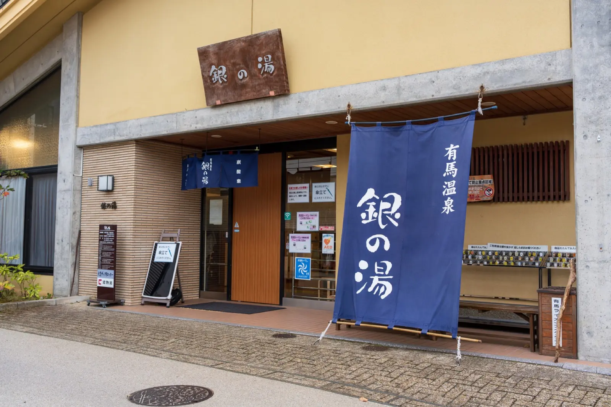

Plan A — A full day
完整的一天｜姬路城 → 神戶牛 → 有馬溫泉
- 09:00
- 從三宮的飯店出發
- 約10:00
- 抵達姬路城，參觀天守閣與好古園
- 13:00
- 回神戶市區吃神戶牛午餐，之後出發往有馬
- 約15:00
- 抵達有馬溫泉，泡外湯、逛溫泉街
- 18:00
- 回到三宮，或直接住在有馬
姬路城與有馬之間沒有直達的電車，神戶牛的店又多在市區。一台車就把換乘、寄行李、等車全部省掉。
政府核可 近運自二第1096號旅行業登錄 第2-904號
CLoVER 是日本政府核可的正規包車業者，計時制、不跳錶，走到哪、待多久由您決定。
營運：ジーピーエム株式会社
From Osaka or Kyoto, one more day
關西機場、大阪、京都、奈良的上下車同樣可以安排。出發地與目的地請在索取報價時告知。

這四處彼此不順路，電車難以串起——一台車可以。
這些路線採計時制（不跳錶）。所需時間較長，請在索取報價時告知出發地、目的地與班機時間。
往下看一天的走法 ↓Three ways to spend a day
抵達日、完整的一天、回國日——時間能怎麼用，差別很大。以下時刻以一般路況試算。
Plan A — A full day
姬路城與有馬之間沒有直達的電車，神戶牛的店又多在市區。一台車就把換乘、寄行李、等車全部省掉。
Plan B — Arrival day
不用在三宮換車、也不用拖著行李找電車。若只想先進飯店，改送到三宮約25分，一樣可以。
Plan C — Departure day
退房後不必先回三宮換車。去程與回程可以一併預約。
Plan D — Mount Rokko art festival
展場分散、班次不多，走起來費力。包車可以照您的節奏一站一站看過去，看完直接下山泡湯。
神戸六甲ミーツ・アート2026 beyond 會期：2026/8/29–11/29
告訴我們您的班機，我們回覆當天的時間表
以上時刻為一般路況下的預估，入境手續與報到所需時間依當日狀況而異。
Travelling as a family
這正是包車最有感的地方。
全程不用換車、不用把行李搬上搬下，也不用找寄物櫃——行李一路放在車上。ALPHARD 可放大型行李箱 3–4 件（4 人乘坐時），HIACE 可放 6–9 件。
獨立座椅、寬敞腿部空間，長距離移動也不易疲累。走到哪、待多久、要不要多繞一個地方，上車後都還能商量。
兒童座椅免費提供，請在預約時告知孩子的年齡與體重，我們會事先裝好。嬰兒車、輪椅等也請一併告知。
適合三代同行、朋友團體與行李較多的機場接送。全車座位皆可舒適乘坐，車頂空間充足。
Our fleet & drivers
全車為最新年式的營業用綠牌車，配備日本原廠的先進安全輔助系統，並定期接受法定檢查與整備。
詢問、報價與預約確認全程以繁體中文回覆，我們會在1個營業日內回信。出發前也會把當天的行程表以中文提供給您。
乘客 1–4 位｜行李 大型 3–4 件
日本高級接送的代表車款。獨立座椅、寬敞腿部空間，長距離移動也不易疲累，適合家庭旅遊與商務接待。
乘客 5–9 位｜行李 大型 6–9 件
適合三代同行、朋友團體與行李較多的機場接送。全車座位皆可舒適乘坐，車頂空間充足。
車輛依預約狀況可能調整為同等級車款。
How pricing works
CLoVER 採「計時制」。以您預約的使用時間為基準，依人數、車型、行駛範圍計算，出發前提供書面總額報價。
以預約的使用時間計費，不使用計程車跳錶。高速公路通行費、一般停車費、營業用旅客保險與消費稅都含在報價裡，途中塞車不會另外加價。
以下為最常見的「一日包車8小時・ALPHARD（1–4位）」的參考範圍。實際金額依日期、路線、時數與人數而定。
時間計費、不跳錶。途中塞車不會另外加價。此為參考範圍，非正式報價。正式報價會以中文回覆總額（含稅），確認後才成立預約。
報價免費，收到需求後我們會在一個工作天內回覆。
Licensed & registered
CLoVER 由 GPM 股份有限公司營運，持有日本國土交通省近畿運輸局核發的租賃轎車事業許可「近運自二第1096號」，車輛為營業用綠牌車並投保營業用旅客保險。
本公司同時登錄為旅行業者（兵庫縣知事登錄 第2-904號），門票、餐廳與住宿也能代為安排（費用另計，於報價中分項列出）。
Request a quote
填寫以下內容，我們會在一個工作天內以電子郵件回覆行程建議與含稅總額報價。此階段不會產生任何費用，也還不算成立預約。
建議先準備好：出發日期・人數・想去的地方（大概即可），填寫更快。
我們會依您填寫的班機時刻，回覆建議的接機時間與含稅總額報價。若班機欄位留白，我們會先詢問您的班機。
回覆會在一個工作天內寄出。若您留的是 Email，請一併確認垃圾郵件匣。
Questions
正式條款與取消規定將於報價時以書面提供。